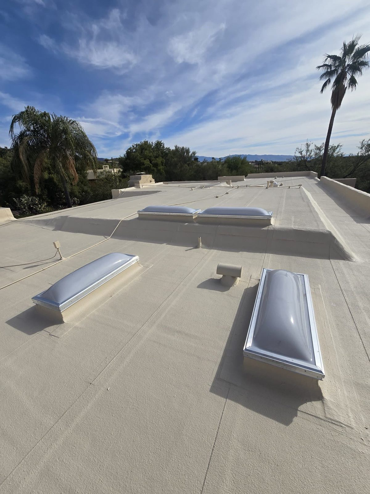

Flat Roofing · Tucson, AZ
Flat Roof Repair & Installation in Tucson
Flat and low-slope roofs need the right system to deal with standing water and desert heat. We repair, recoat and install flat roofs on houses and commercial buildings all over Tucson.
- Leak & ponding repair
- TPO & modified bitumen
- Reflective coatings
- Residential & commercial
Flat & Low-Slope Experts
Flat roofs fail their own way, so we fix them their own way
Flat roofs don't run water off the way a pitched roof does, so the leaks usually come from standing water, split seams, or the sun breaking the material down. Throw a patch on the wrong spot and it won't hold.
We figure out what's actually failing, whether that's ponding, a blistered membrane, split seams or a worn-out coating, and fix it with the right system: TPO, modified bitumen, built-up, or a reflective elastomeric coating.
- Ponding-water solutions
- Seam & blister repair
- TPO, mod-bit & built-up systems
- Reflective recoating
Leak & Ponding Repair
We find and fix the true source — splits, blisters, flashing and low spots.
Membrane Systems
TPO, modified bitumen and built-up roofing installed to last in the heat.
Reflective Coatings
Elastomeric and silicone coatings that cut heat and extend roof life.
Systems
Flat roofing systems we install
The right flat-roof system depends on the building, the budget, and how the roof gets used. We install and service all the main ones.
Related Guides
Flat roof guides from our blog
Flat roofs live or die on drainage and upkeep. These guides cover installation, maintenance, ponding water and modified bitumen.
Flat roof installation in Tucson: an expert guide Flat roof maintenance in Arizona, season by season Fixing water pooling and scupper issues on Tucson flat roofs What is modified bitumen roofing?
How It Works
Our Roofing Process
Roof Diagnosis
We identify exactly why the flat roof is failing — not just where it's leaking.
System Recommendation
Repair, recoat or replace, with the right membrane for your building and budget.
Installation
Clean prep, proper drainage detailing and a correctly installed system.
Warranty
Workmanship warranty and guidance on keeping the roof performing.
From a real inspection
What delamination looks like on a flat roof
Splitting, soft spots, bubbling and water pooling because the scuppers sit too high to drain. Filmed on an aged built-up roof in Tucson.
FAQ
Roofing Questions, Answered
Still wondering about something? Call us at 520-753-1758 — straight answers, no pressure.
Ask Us DirectlyWhy does my flat roof keep leaking?
Flat roofs leak from standing water, split seams, blistered membrane and bad flashing. A patch on the surface hardly ever solves it. We find what's actually failing and fix the system the right way.
What is TPO roofing?
TPO's a single-ply reflective membrane, tough, energy-efficient, and you see it on a lot of commercial flat roofs. That reflective surface is a real plus in our heat.
How much does a flat roof coating cost?
Depends on the size, the shape it's in, and whether you go elastomeric or silicone. It's usually way less than a full replacement and buys you several more years. Estimates are free.
Can you fix a commercial flat roof?
Yep. Residential and commercial both, TPO, modified bitumen, built-up, coatings, and we'll work around your business hours so we're not in your way.
Is a coating or a new roof better for my flat roof?
If the roof underneath is still solid, a reflective coating seals it up and stretches its life for not much money. If the membrane's actually failing, replacing it is the better deal long-term. We'll tell you which way we'd go.
Flat roof ponding or leaking?
We'll find the real cause and tell you whether to repair, recoat or replace it, with a free written estimate.
Let's Talk
Let's Take a Look at Your Roof
Tell me what's going on up there — a leak, storm damage, an old roof that's seen better days, or a full replacement — and we'll get you on the books for a free inspection.